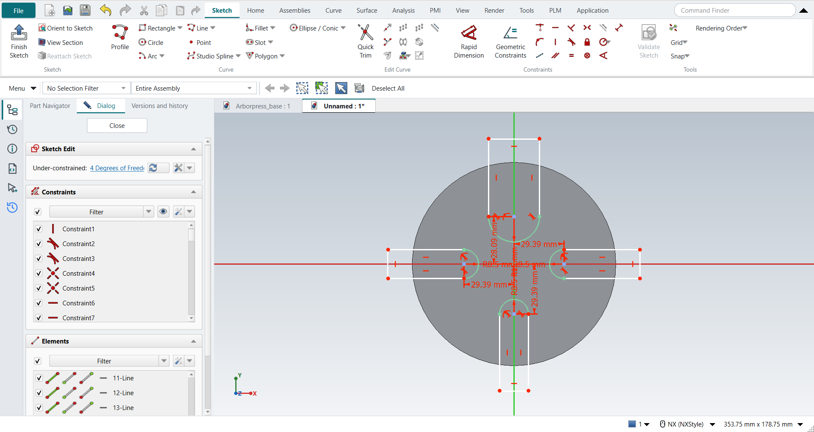

Tutorial AJ: Circular Base
| Source |
Ming C. Leu, Wenjin Tao, Amir Ghazanfari and Krishna Kolan, NX 12 for Engineering Design (Missouri University of Science and Technology), exercise 3.6.1. The book gives only the dimensioned top view; the steps here are ours. |
| You learn |
Extrude a disc, then sketch on its face and cut with Extrude (Boolean Subtract); Profile with tangent semicircles; locating a slot from its axis and the centre |
| Sizes |
the book’s top view, in mm. The disc is R60. The top slot is 30 wide, and its semicircle’s centre is 31.905 in from the rim. The other three are 17 wide, 30.605 in from the rim. Only the right one is dimensioned; the figure draws the left and bottom ones the same. The book gives no thickness. 20 is used here, about a third of the press base’s 60 as the assembly picture in 6.6.1 shows it. |
The slot depths are measured from the rim, along the slot’s axis, to the semicircle’s centre. That centre is 60 - 31.905 = 28.095 from the middle for the top slot and 29.395 for the others.
Step by step
1. The disc
Ctrl+N, then X with nothing selected and the XC-YC plane. O for a circle: click the origin, then the rim. Make its radius 60 (Radius / Diameter drop-down > Constrain radius). Ctrl+Q, type 20 and press MB2. The Boolean is None: a new body.
2. The four slots
Select the disc’s top face and press X. The sketch opens on the face. Draw each slot’s U with Profile (Z):
-
start outside the disc and go down one side;
-
press M three times for a tangent arc and click the other side, which makes the semicircle;
-
go back up that side, which FreeCAD draws as a tangent line;
-
go across outside the disc to the first point.

Then fix each slot:
-
the semicircle’s centre on the slot’s axis: pick the centre and the axis, then Coincident;
-
the radius: 15 for the top slot, 8.5 for the others;
-
the centre’s Distance from the middle: 28.095 for the top slot, 29.395 for the others;
-
the two sides parallel to the axis.
The outer ends can stay where they are, as long as they are outside the disc.
The replay
| # | In the book (NX) | In FreeCAD NX-Style | Result | Notes |
|---|---|---|---|---|
AJ1 |
A new part (mm) |
Ctrl+N, Model template |
same |
new document ['Unnamed'] |
AJ2 |
Extrude (X), sketch on the XC-YC plane |
X key, plane row + MB2 |
same |
picked XY-plane (Base plane) |
AJ3 |
The disc: a circle R60 about the origin |
O key, MB1 at the origin and on the rim, MB2; circle + 'Radius / Diameter' drop-down > 'Constrain radius' = 60 |
same |
centre snapped to the origin True; Radius constraint; radius 60 mm; DoF 0 |
AJ4 |
Finish Sketch, Extrude 20 (the book gives no thickness), Boolean None |
Ctrl+Q; 'lengthEdit' = 20 mm, MB2 = OK |
same |
Boolean 'None'; same solid as the reference: 0 mm³ differ, box within 0 mm, 3 faces (3 in the reference); controller: committed new_body, undo step 'Extrude', 1 step(s) added |
AJ5 |
On the top face: a U for each slot with Profile (Z), the semicircle as a tangent arc |
select the top face + X; per slot Z, 5 MB1 clicks (M three times before the semicircle’s end), MB2 |
same |
top ['line', 'arc', 'line', 'line']; right ['line', 'arc', 'line', 'line']; bottom ['line', 'arc', 'line', 'line']; left ['line', 'arc', 'line', 'line']; sketch origin at (0.0, 0.0, 20.0) |
AJ6 |
Each semicircle’s centre on its axis, its radius, and its distance from the middle |
centre + axis + 'Coincident', arc + 'Radius / Diameter', centre + origin + 'Distance', per slot |
differs |
12 of 12 constraints; semicircles within 4.4e-21 mm; DoF 4 (the outer ends stay free outside the disc); added by hand: top: Vertical on a side (1); right: Horizontal on a side (1); bottom: Vertical on a side (1); left: Horizontal on a side (1) |
AJ7 |
Finish Sketch, Extrude the four slots through, Boolean Subtract |
Ctrl+Q; Boolean 'Subtract', 'lengthEdit' = 20 mm, MB2 = OK |
same |
Boolean 'Subtract'; same solid as the reference: 0 mm³ differ, box within 3.6e-13 mm, 18 faces (18 in the reference); controller: committed subtract, undo step 'Extrude', 1 step(s) added |
AJ8 |
Save |
file name given once by script (the system file dialog is not driven); a change, then the Ctrl+S key |
same |
Circular_base.FCStd rewritten by Ctrl+S: the file holds the change and the part is unmodified afterwards (modified before the key: True); FreeCAD format, not .prt |
| Result | Means |
|---|---|
same |
The book’s NX steps work as written. |
differs |
It works, but the FreeCAD way is different; the notes say how. |
limit |
The book’s way fails in FreeCAD itself; a workaround follows in the next steps. |
missing |
FreeCAD has no such function; a stand-in follows. |
skipped |
Not replayed; the notes give the reason. |
FAILED |
Did not work. |
The solid is compared with the same disc and slots built with FreeCAD’s Part API (nxstyle/geomcheck.py).
What differs from NX
-
The book’s top view has no thickness. 20 mm is our assumption.
-
On a full circle, Radius / Diameter makes a diameter by default, as NX’s Radial Dimension does. For R60, pick Constrain radius from its drop-down; FreeCAD then keeps that choice for the next clicks.
-
FreeCAD’s quantity fields keep only as many decimals as the Decimals preference shows (2). When such a field loses focus, for example on a click on OK, it rewrites its text with two decimals and reads that text back as its value. The same happens when a field is filled from a value that is already stored. In plain FreeCAD 1.1, 28.095 typed in the dimension dialog is stored as 28.09, and the slots miss by 5 µm. A 28.095 dimension opened again shows 28.09, and OK writes 28.09 back. NX-Style gives the field the decimals the value needs before it rewrites itself, so 28.095 stays 28.095 in the dimension dialog and in task panels such as Extrude’s. The sketch’s on-view fields keep what you type in FreeCAD itself. The replay reads every typed value back.